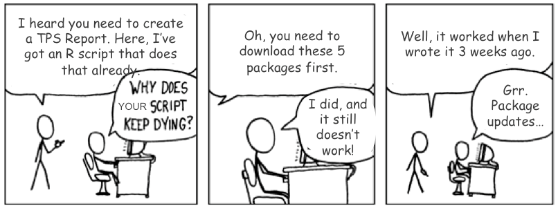

SORTEE Code Club is an online meeting where people come together to learn, share, and collaborate on coding-related topics in an informal and supportive environment
Disclaimer: today’s Code Club will focus on Reproducibility in R
Introduction to Reproducibility in R
A reproducible coding environment is a computational setup with clearly documented code, data, software versions, and methods allowing exact replication of results.

Original comic from xkcd
The Why
Reproducible coding environments:
Ensure reliability and credibility of research findings
Facilitate collaborative research and transparent scientific communication
Enable efficient troubleshooting and debugging
Save time by reducing redundant efforts to recreate computational setups
Promote best practices in scientific computing and data analysis
Understanding Packagesüì¶ and Librariesüìò
Collections of functions, data, and compiled code that extend R’s functionality
Packagesüì¶ reside within a libraryüìò, a directory on your computer where R stores installed packages
Managing package versions matters for:
Version control
Transparency
Open projects
R Packages (2e)
The How
There is no single solution or perfect approach to reproducibility
Instead, there are a collection of various best strategies that you can use!
Example
For example, consider different ways of referencing file paths in your R scripts:
# Bad: absolute pathsetwd("C:/Users/MyName/Documents/Project/Data")data <-read.csv("data.csv")# OK: relative path extensively documented in README (but fragile!)setwd("~/Downloads/Data")data <-read.csv("data.csv")# Better: using here package, but without RProject the structure is unclearlibrary(here)data <-read.csv(here("Data", "data.csv"))# Best: explicit use of an R project (.Rproj file) ensures 'here()' always resolves correctlylibrary(here)data <-read.csv(here("Data", "data.csv"))
The How: .RProject
R Projects is a way to organize all your analysis files into one easy-to-use place.
R Projects make your life easier because:
Paths are simple(r)
Easy collaboration
Less confusion
Example : .RProject
For example:
.RProject is not enough alone
Even tho an R Project helps organize your analysis into one coherent location…
… You still need a structured directory layout to organize your file inside this project to get the most out of it
.RProject is not enough alone
Not this!
But this!
The How: Managing Packages with renv
renv helps make your R projects reproducible by managing your package dependencies
It records which packages (and their versions) you’re using in your project.
It helps you avoid package version conflicts across different projects.
It ensures that your project setup can be easily replicated later.
Using renv: Step-by-Step
Step 1: Initialize & Snapshot (renv::init() and renv::snapshot())
Create an isolated library for your project
Save exact versions of packages you’re using into a file renv.lock
Step 2: The renv.lock file
Lists exact package versions and sources
Ensures integrity and authenticity of packages
Step 3: Restore (renv::restore())
Recreates your exact environment on any computer by installing packages from the renv.lock file
Limitations
renv doesn’t handle:
R itself (versions)
System dependencies (compilers, external libraries)